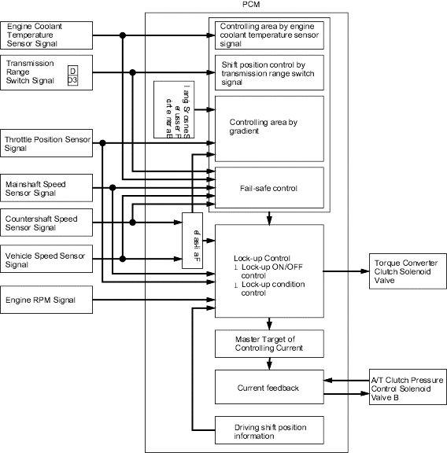

position and in 3rd gear in
position and in 3rd gear in  position.
position.
Automatic Transmission
|
14-35 |
Lock-up Control System
The torque converter clutch solenoid valve controls modulator pressure to switch the lock-up shift valve and lock-up ON and OFF. The PCM controls the torque converter clutch solenoid valve and the A/T clutch pressure control solenoid valve B. When the torque converter clutch solenoid valve is turned ON, the condition of the lock-up starts.
The A/T clutch pressure control solenoid valve B regulates A/T clutch pressure control solenoid B pressure and apply pressure to the lock-up control valve and the lock-up timing valve. The lock-up control mechanism operates in 3rd and 4th gears in position and in 3rd gear in position.
